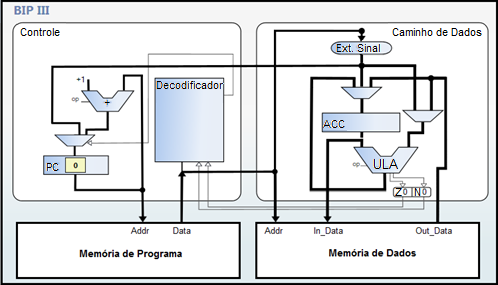
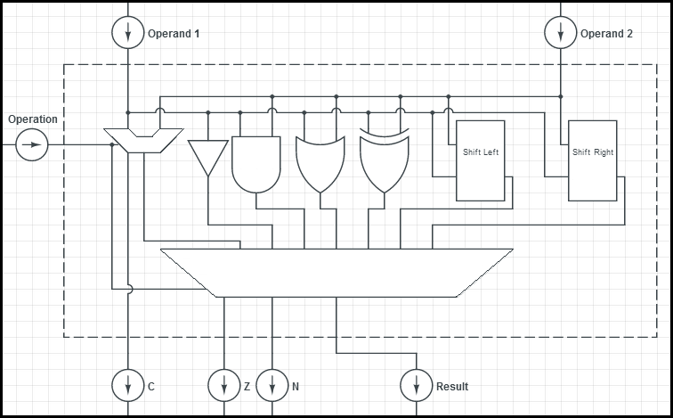

The same way the BIP II is an extension of the BIP I, BIP III is an extension of the BIP II, coming to add new features to the processor. Implementations performed on the model of BIP II who came to give the BIP III were designed primarily to provide support for logical bitwise operations. To make this possible, the expansion of existing class instruction hitherto been necessary. Held in the expansion were added to class instruction relating to Boolean logic and logical shift according to the table below. (RECH, 2011).
| Operation Code | Instruction | Operation | Class |
|---|---|---|---|
| 00000 - 00111 | Ift of instructions for BIP I. | ||
| 01000 - 01110 | Ift of instructions for BIP II. | ||
| 01111 | NOT | ACC ← NOT (ACC) | Boolean logic |
| 10000 | AND | ACC ← ACC AND (address) | Boolean logic |
| 10001 | ANDI | ACC ← ACC ANDI constant | Boolean logic |
| 10010 | OR | ACC ← ACC OR (address) | Boolean logic |
| 10011 | ORI | ACC ← ACC ORI constant | Boolean logic |
| 10100 | XOR | ACC ← ACC XOR (address) | Boolean logic |
| 10101 | XORI | ACC ← ACC XORI constant | Boolean logic |
| 10110 | SLL | ACC ← ACC SLL constant | Logical shift |
| 10111 | SLR | ACC ← ACC SLR constant | Logical shift |
| 01111 - 11111 | Reserved |
Source: Adapted from Pereira (2008).
As can be seen in the figure below, the organizational structure of BIP III is very similar to the structure of the organization of BIP II, differing from each other only in the ALU (Arithmetic Logic Unit).
Source: Vieira (2012).
In BIP II ULA performed only arithmetic operations addition and subtraction, with the addition of new functions the ALU control logic needed to be changed to support such operations were possible. By combining this in BIP II arithmetic unit and the addition of features Boolean logic and logical shift proposed by BIP III ULA shall be an identity of the Unit presented in the figure below. (PEREIRA, 2008).
Source: Adapted from Pereira (2008).